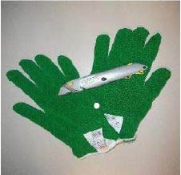
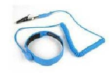

Knife blades are extremely sharp and dangerous. Use extreme caution and care when handling blades or performing any work near them. Wear cut-resistant gloves, long sleeves, and protective eye wear whenever handling knife blades or threading web through the knife. Perform Safety Lockout procedure in Operation section before performing any maintenance. Always store unused knife blades in a safe and protected location.

Perform Safety Lockout procedure in Operation section before clearing jams. Failure to do so could result in severe injury or death.
Wear an anti-static wrist strap when handling printed circuit cards to prevent card damage from electrostatic discharge (ESD).
